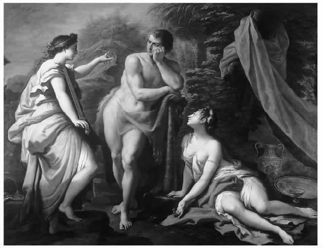

任何研究古代世界哲学的人都熟识普罗迪库斯关于大力神赫拉克勒斯的选择的故事。普罗迪库斯是公元前5世纪一位所谓的“智者”，即专事研究的知识分子。我们是从后来的作家色诺芬那儿知道这个故事的，他记述了哲学家苏格拉底的谈话。
在苏格拉底与友人亚里斯提卜的谈话中，亚里斯提卜坚信：当你想要什么的时候就该去拿到它，而不要拖延对愿望的满足。苏格拉底对此予以反驳，认为这种处事原则是危险的。如果你不能约束自己的愿望，那么你最终就会听命于那些能够管住自己的人。这些人利用其很强的自控能力在和你的竞争中获胜，从而控制你的生活。亚里斯提卜不相信这一点，他认为他能够过这样一种生活：追求自我满足感，同时又能够避免受他人的左右——这便是通往幸福之路。
智者
“智者”这一术语用来指公元前5世纪的一些知识分子，他们没有形成一个统一的知识传统，却代表了一个新的动向。他们游历于各城市间，为赚钱而传授各种知识技巧，其中最畅销的便属修辞和辩论方面的技巧，这些技巧会为学员在公共生活中提供一种优势。虽然其关注内容只有一些可归于哲学传统，但他们也算得上哲学传统的一部分，这是因为柏拉图在他的许多对话中称他们为华而不实且不称职的蠢人，烘托出他的英雄人物苏格拉底。柏拉图的描述带着幸灾乐祸的口吻，有失公允，但我们在任何细节上都没有足够的独立例证来反驳它。
最著名的智者有伊里斯的希庇亚斯、科斯的普罗迪库斯、卡尔西登的特拉西马库斯以及阿伯德拉的普罗泰戈拉。希庇亚斯以著作颇丰著称，普罗迪库斯以语言研究闻名，在《理想国》中特拉西马库斯被描述为持有一种正义，这种正义被降低为为强者的利益服务。普罗泰戈拉是唯一持有一种重要哲学观点，即相对论的人；相对论认为，一个信念是正确的，只是因为它在拥有该信念的人眼里似乎是正确的。柏拉图在他的对话集《特埃特图斯》中驳斥了这种观点（见后面第72页）。
柏拉图对智者的鄙视出于多种原因。他不接受他们的观点，尤其是相对论。他认为：以获得金钱利益而传授知识技巧，是把这些技巧当成了商品，从而降低了其自身价值。因为这是以知识技巧为你做了什么来衡量其价值，而不是以其自身原因而给它们以尊重。他也认为，正是因为智者的不严肃性，他们在哲学辩论中实际上是不胜任的。当然在柏拉图对这些人的表述中，他们也确实如此。
苏格拉底不同意这种看法。他认为这不仅仅意味着避免他人对你做什么，而且意味着你如何看待自己的人生。为了说明这一点，他讲述了普罗迪库斯关于半神半人的赫拉克勒斯的故事。赫拉克勒斯在刚步入成年的时候来到了一个十字路口。两个女人走了过来，各自劝他选择那两条截然不同的道路中的一条。一个女人显得入时、大胆且刻意打扮。她跑到他前面，督促他选择那条易行的路——满足自己的愿望，随时做自己想做的事，只需考虑如何花最少的力气去做。她说：尽管我的敌人称我为邪恶（或快乐），但我的朋友称我为幸福。另一个女人从举止来看严肃、谦逊，她用言语而不是外表来请求赫拉克勒斯跟她（美德）走，尽管在她指出的路上要付出努力，会不断遇到挫折，成功会来之不易。她说：我所提供的一切是有价值的，但需要你付出并学会克制；邪恶和快乐提供了通往幸福的便捷之路，但最初的魅力会渐渐消退，留下来的东西没有什么价值，而美德则是通往成就与尊重之路，从而构成真正的幸福。
赫拉克勒斯的选择在西方艺术中是个常见主题。下面这幅画出自保罗·德·马泰斯之手，他于1712年受沙夫茨伯里第三代伯爵、哲学家安东尼·阿什利·库珀之邀，为后者论述美德的书绘制插图。该画和许多类似图画所强化的某种信息使现代读者感到不适：道德上的选择被描绘成两个女人竞相争得一个男人。更有甚者，尽管强调起作用的是现实而不是外表，但在表达这点时经过充分考虑，作者还是将一个女人描绘得比另一个更有魅力。
但除此之外，这样一个在我们看来过于浅显易懂的故事却如此闻名，我们可能对此感到迷惑不解。大家会认为：如果让你在美德和邪恶间选择，你显然应该选择美德。但这只是问题简单的一面。难点是搞清楚美德指什么；将美德描绘为一个谦逊的女子而不是一个不知廉耻、行为不检的女子有性别歧视之嫌，而且对我们没有多大帮助。如果我们这样想，可能也是因为大多数20世纪的伦理思想使古代的伦理框架显得生疏。但相对而言这是最近的看法，并且随着美德在哲学和政治话语中出现的频率越来越高，这种看法现在正迅速得到改变。结果是，我们现在很容易赞同美德对赫拉克勒斯所说的话。

图4 赫拉克勒斯在质朴的美德与诱人的快乐间进行抉择
美德和邪恶为赫拉克勒斯提供了通往幸福的不同道路。普罗迪库斯将某种重要的观念阐释得很清楚——他是最早的此类哲学家之一，这种观念即我们在自己的生命中都在追求幸福。这种想法也见于稍晚些时候的哲学家德谟克利特和柏拉图的论述中。柏拉图强调说，否认幸福是我们人生的终极目标、是每个人人生之路的终点是非常荒唐可笑的。
但是普罗迪库斯还强调了另外一点。当你刚刚步入成年，向往幸福并有意识地为之努力时，你会面临一个选择 。你不能拥有全部，你不能在人生的征程中一方面满足自己的各种愿望，另一方面又希望实现有价值的目标或过一种你或他人都会尊重的生活。明确承认幸福是人生目标会使你同时认识到应该按一种方式而不是另一种方式来思考及安排自己的人生。生活给你提供了各种选择机会，你必须作出决定。几个世纪后，了解到更为复杂的讨论的西塞罗仍然认为：这个故事就每个人的人生及人生态度道出了某种深刻的东西。
在对上面这个故事的不同讲述中，那个不知廉耻、行为不检的女人通常是邪恶或快乐。在我们的道德哲学传统中，如果说快乐是一种不好的、不可取的获得幸福的方式，这似乎有些奇怪。约翰·斯图亚特·密尔是功利主义传统的主要创始人，他实际上将幸福定义为快乐、没有痛苦。但是即使我们不承认快乐事实上构成了幸福，由快乐的反面 美德构成幸福的看法也仍然显得有些古怪。从这里我们可以看出古代伦理思想在概念上赋予幸福的内容是不同的。
古代伦理思想中的幸福并非指感觉良好或心情愉悦；它根本不是一种感觉或情感。幸福与否，是就人生整体而言的，因此对幸福的讨论也就是对幸福人生的讨论。不走运的是，对我们来说幸福并不仅仅指人生，还包括那些时刻和转瞬即逝的经历。正因为考虑这些不同的方面，现代关于幸福的讨论很快便让人迷惑不解。在古代伦理学中，对幸福展开伦理讨论的角度决不同于“感觉良好”。
有时你会从你的日常生活中退后一步，思考自己的整个人生。你可能由于一次危机而被迫这样做，或者是要经历你人生中的一个阶段，例如，正如赫拉克勒斯的故事一样，不再是青少年而是成年人这一转变促使你思考自己一生要做什么，你的价值何在，以及什么对你最重要。对于古人来说，这便是伦理思考的开始，是伦理反思的切入点。一旦你有了自我意识，就会面临选择并要处理这样的情况：某些价值和行动排斥其他的价值和行动。你要问自己：你所有的关注点是如何结合在一起的，或者如何未能结合。所有的古代思想家都认为，通过使自己的关注点顺应自己的最终目标telos，你追寻的是如何使人生有意义。因为，那些不能以任何全面的方式将自己的关注点结合在一起的人们基本否认了自己所做的一切都是自己的，否认这一切结合在一起构成了自己的一生。
关于你的人生前景、人生中所表现的价值，你能讲出什么呢？一开始，可能不多。只是在思考了一些伦理学说之后，你才会对什么样的价值支配了你的人生这样的问题产生一个较明晰的看法。但有一点，即使在寻求理论帮助之前便可以肯定：正如自普罗迪库斯以降的哲学家都赞成并由亚里士多德最广为人知地提出的，人们都认为自己的最终目的是获得幸福，人们所做的一切都是为了过一种幸福的生活。（因此古代伦理学说被称为幸福论，取自希腊文eudaimonia，意为幸福。）
为什么这一点应该如此显而易见？如果通过快乐或感觉良好这样的概念来介绍幸福，便不会如此一目了然了。但是幸福符合我们的最终目标所拥有的形式上的 特征，也就是说，甚至在我们开始询问幸福涵盖哪些内容之前，幸福的人生也是要满足某些要求的。任何可能被包含进幸福的内容，如美德、快乐等，都必须满足这些要求。将你的所有关注结合在一起的整体目标应该是完整的 ：你所做的一切都是为了这一目标，而不是为了别的什么。这一目标也应该是自足的 ：它不会放弃你生命中任何对美满生活有价值的部分。这些尽管有深刻含意，却是常识。在常识或直觉这一层面，幸福是唯一的目的，在完整而又自足的整个人生中，这是一个能够理解的人生目标。我们为了幸福而去做其他的事情，但是为了某种进一步的原因而需要幸福，这听起来没有什么道理。而一旦我们生活得幸福，我们便不缺任何使我们生活美满的东西了。这些在古代幸福观中是显而易见的。但亚里士多德立即指出，它们说明不了什么，因为在如何对幸福进行分类这一点上存在着很大的分歧，关于伦理学的不同思想流派均源于此。
然而，有一点从一开始便是肯定的。幸福是拥有一个幸福的人生——是指你的整个人生。而快乐更自然地被理解为一种片断式的感受，是你此时所感而非后来所感。它是指你在完成构成自己人生的各项活动时的感受。你可能在享受一顿饭，一段交谈，甚至是此时而非彼时的生命。但是按照古代的思考方式，你不能够此刻幸福而彼时不幸福，因为幸福是相对于你的整个人生而言的。
因此我们就会发现为什么在普罗迪库斯的故事中，快乐所起的作用就是提供一条通往幸福的明显歧途。快乐使我们关注此时此地，以及眼前需要满足的愿望；这就妨碍了人的自我控制能力和理性的整体反思能力，而这种能力正是要投身于有价值的事业的人生所必需的。快乐是短暂的，幸福是久远的。所以，与现代看待这个问题的角度完全相反，快乐似乎连被涵盖进幸福的潜在可能性都没有。你的整个人生怎么能够专注于快乐这种一时的满足呢？这样做的人犯了大错，因为他满足于眼前的快乐，而失去了对人生其他内容的适当关注。
事实上，在古代伦理学中，把快乐当成伦理目标的享乐主义一直处于防守姿态。反对者乐于将此解释为：在人类对快乐的追求中，某些方面本身就没有什么价值。但这只是启发性的说法。真正的问题是：把快乐当作指导人整个一生的目标是有缺陷的。这一点从两种主要的享乐主义学说中便可见一斑。
亚里斯提卜建立了昔兰尼学派，名字源于他们在北非昔兰尼的家乡。它并不是一个自成一体的学派，但是其成员都认为我们的最终目的，即我们在我们所做的每件事情中所追求的是快乐。他们理解的快乐，毋庸置疑地是指当我们享受某种经历或对此感觉良好时所拥有的感受。快乐是动态而不是静态的（痛苦亦如此）。快乐彼此没有分别，一种快乐不比另一种快乐更快乐，也就是说，快乐是指一种单一的体验，无论产生它的环境怎样，它是一样的。我们只有亲身经历才能感受到什么是快乐。我们只知道我们的感受，而不是带来这种感受的东西。因此已经逝去的过去的快乐和正在走来的将来的快乐，都不能与我们正在经历的现在的快乐相比；有时根据昔兰尼学派的说法，好像只有现在才存在似的。当然，现在确是举足轻重的，我们应该着眼于获取现时快乐来安排我们的生活。
享乐主义的种类
北非昔兰尼的亚里斯提卜（约前435——前355）去了雅典并成了苏格拉底的助手。关于他生平的资料无从考证，主要是些轶事；这些轶事表明他过着一种丰富多彩的生活，醉心于满足自身，不考虑自己的尊严，也不关心他人。然而，他非常关心女儿阿雷特，把自己的思想传授给她；她又把它们传授给自己的儿子小亚里斯提卜，小亚里斯提卜可能是属于昔兰尼流派的系统哲学的奠基人。
雅典的伊壁鸠鲁（前341——前270）对享乐主义拥有自己的理解，尽管他确实接受过一些哲学方面的教育，但他自称靠的是自学。大约公元前307年，他在雅典建起了一个哲学学院。与柏拉图、亚里士多德和斯多葛学派的学院不同，伊壁鸠鲁的学员并不在公共场所集会，讲学内容也主要是辩论与论争技巧。伊壁鸠鲁的学院被称为花园，名字取自他的家乡；在讲学中鼓励学员学习和记住伊壁鸠鲁及其他创始成员的话语。口头和笔头的讨论贯穿学院历史的始终，但是伊壁鸠鲁享乐主义者将伊壁鸠鲁视为将人从不幸中拯救出来的救世主，一束闪耀之光；其他学院的哲学家则认为这种看法过于恭敬。伊壁鸠鲁的主要贡献是他的享乐主义伦理学。在他的自然哲学中，他继承了较早时期原子论者德谟克利特的观点，发展了一种在古典哲学中不常见的世界观，认为世上没有天意或任何形式的目的论，虽然有神存在，但其对世界或人类没有兴趣。
如果最重要的是获得现时的快乐，那么幸福出了什么事呢？单单是在古代哲学家中，就有一些昔兰尼学派的人士认为我们不应考虑幸福。一个幸福的人生是一个有计划的人生，其间过去、未来的快乐因与现在的快乐相关而有意义，但是如果我们仅考虑追求现在的快乐，那么幸福常常会挡在中间，我们对此应不予理会。
对你的人生来说，这可能听起来像是一个自毁的策略。它注定要寻求那种来自诸如性爱与毒品的强烈的现时快乐，而不考虑你的未来。实际上，昔兰尼学派不必固守这一点，他们只需坚持以下观点即可：只有在能够产生现时的快乐时，思考或关心你的整个人生才具有价值。这就意味着全面思考你的人生只具有辅助作用，只是实现其他目的的手段。这一想法看起来并不具有多少说服力。无论如何，昔兰尼学派在古代伦理思想中至多只是一个怪异的流派。
伊壁鸠鲁似乎从他们的失败中吸取了教训，他试图将快乐当作实现幸福的条件，而幸福则满足了整体的要求；如此一来，他就使自己的学说更易为人所接受，更趋于主流。他认为，你对自己整个人生的关注并不只提供了手段供你享受现在，而是像人们通常认为的那样，关注你的整个人生有其自身的意义。然而，幸福的人生实际上就是充满快乐的人生。
从已经迈出的几步中我们可以看出以下说法听起来仍令人感到奇怪：追求短期的满足怎么能和对你整个一生至关重要的长期关注混为一谈 呢？伊壁鸠鲁不得不否认快乐总是一种短时期的享乐。他坚持认为快乐分两种，其中一种是人们从类似进食、饮酒、性爱等活动中获得的享乐，是一种“动态的”快乐；还有一种是“静态的”快乐，这种快乐 才是我们应追求的实现幸福人生的恰当方式。静态的快乐即没有身体的疼痛和精神的困惑，在这种状态下，你不会感到有任何妨碍或不适。伊壁鸠鲁大胆提出：这种状态是我们所能达到的最高级的快乐，也就是说，你不是通过做那些使你感觉良好的事情来拥有幸福，而是通过如此安排你的人生达到一种无痛而又平和的境界。毋须诧异，这样做就意味着“冷静地思考”，仔细审视你的人生，拒绝总的来说会冲击你内心平静的活动。因此，如果那些短期的满足和成功会使人生的整体计划变得不太平稳或受到冲击，那么就该放弃它们。伊壁鸠鲁的幸福人生观根本不是指醉心于游乐体验，而是指为保持平静所采取的谨慎的、避免冒险的策略。批评家不厌其烦地指出，尽管这是一个可以接受的关于如何快乐地生活的想法，但他所提出的最快乐 的生活方式却是个独特的概念。
如果考虑到古代伦理学的框架，我们就会明白为什么享乐主义不占优势。享乐主义者似乎注定会作出令人难以置信的论述，如亚里斯提卜关于幸福的论述和伊壁鸠鲁关于快乐的论述。
现在我们把幸福常常理解为快乐和愿望的满足（从我们广泛而又含混地使用“幸福”一词便可见一斑），这使得一开始很难看到古代幸福说的魅力。如果幸福便是获得你想要的，那么赫拉克勒斯的选择所蕴含的思想便没有意义了。然而，我们关于幸福的观点来源广泛，也包含了更符合幸福论主张的因素。例如，我们认为幸福的人生包含成就与成功，而不只是得到你想要的东西。当把人生作为整体来思考时，幸福是愿望的满足说便会陷入困境。
但直到最近，在赫拉克勒斯的选择中，真正不相容的观点还是美德的作用问题。在现代伦理思想中，直到不久前美德变成了一种带着几分荒唐的概念，人们只能从历史的角度来理解它，而不能在伦理思考中严肃地用到这个概念。但在刚刚过去的十年里，“美德伦理学”又重新得到极大的重视。但是我们再一次发现，我们对美德的理解和古代的美德概念并不吻合，因此需要作一些解释和比较。
古代的美德可以简单地理解为进行系统思考去做道义上正确的事；这一理解的全部意味即我们有几分明了要去做从道义上讲是正确的事，而不是其反面——道义上错误的事。我们不必以详尽叙述什么才是道义上正确的事来展开。我们在这方面的阐述会随着对美德阐述的加深而深入。
美德的概念要比这丰富得多，但人们已经把它与非道德问题区别开来——例如，把美德理解为一种非道德意义上的“卓越”。［不幸的是，人们受误导想要将古代伦理学文本“现代化”，却致使一些译者将希腊单词德性 （arete）译为“卓越”而不是大概更传统的“美德”；因此引起歧义，认为这些文本是关于道德的。考虑到现代道德哲学家承认美德包含道德含义，这一点就显得尤为遗憾。］
如果一个人要去做道义上正确的事，不是偶尔为之而是一贯如此，他必须有自控能力和坚强的意志来抵制使自己想做其他事的（众多）动机。因此，当美德告诉赫拉克勒斯她所指的道路艰难，又常常充满不快和挫折时，便很容易理解了。做道义上正确的事是好的，但是有美德的人要做的比这多得多。她要有一种性情、一种坚定的心态来做这种道义上正确的事。为了做到这一点，她必须已经具备两个方面的能力，即透彻地理解道德含义并愿意照此行事。这两点既不容易也不会很快做到，而当一个人可被称为有美德的时候，他一定已经使自己锻炼成了具有某种特点的人。因此在美德和你的整个人生间有一种联系：成为讲美德的人意味着成为拥有了某种特点的人，而这就要求你对自己的整个人生以及志愿成为哪一类型的人进行深入地思考，此外你还要有决心来贯彻这一切。如果你只是一味地满足自己的愿望，从来不培养自己从长远的角度去思考和行动的能力，那么这一切便会不了了之。
对美德这一概念的现代理解在许多方面不尽如人意，在某种程度上，通常是将美德看作一种行为习惯。因为你看起来确实能够培养一种慷慨大度的习惯，而可能没有勇敢行动的习惯，这就使得各种美德似乎成为以独立方式自行发展的不同习惯。从古人看问题的角度来看，应该由你关于道德正当性的认知将行为上各自独立的习惯联系在一起，因为一般不会出现以下这种情况：道德对如何做到慷慨大度有一套要求，而对如何具有勇气则有完全不同的另一套要求。在古代伦理学中，重要的是人们并非拥有一个个独立的美德，而是从总体上说一个人是有美德的，对于各不相同的美德拥有一种统一的认识，而这种认识被称为常识或实践智慧（phronesis）。
再者，在古人对美德的理解中，常识表现为实践推理，这种推理和人们做事的动机密不可分。在第一章我们已经看到，许多古代学说是关于理性和情感之间的关系的，但大家都同意在有美德的人身上，情感并不或不再与理性争斗。知道了道德行为有哪些要求，但为实践这种行为必须战胜相反动机——这样的人还不是有美德的人，仅是自我控制能力好而已。美德所要求的，是人的动机与其理解力保持一致。因此，从古人的角度来看，美德是一个要求相当苛刻的观念。这就不难看出为什么伊壁鸠鲁享乐主义的批评家们指责他不能为美德作出解释。如果快乐是我们应该追逐的至上目标，那么除了将道德作为获得快乐或避免痛苦的手段之外，很难看出为什么我们还要在意道德。伊壁鸠鲁否认他坚持这一点，但在这方面，他的批评家似乎胜他一筹。
在古代伦理争辩中，美德在幸福中的地位如何是最紧迫的问题。美德是通往幸福生活的正确通道，但这意味着还有很多选择。幸福是我们的总体目标；为了幸福，我们会去完成或追求所有其他的事情，而我们并没有更深的原因来追求幸福。成为一个有美德的人便会获得幸福，但毫无疑问，从常识的角度来讲我们可能认为其他方面也起作用，例如拥有一笔数目过得去的钱和其他的必需品、获得成功等。穷困潦倒、一败涂地的人生能够称为幸福的人生吗？
亚里士多德是古代哲学家中最近乎常理的人，他认为我们的这种反应是重要的。他的观点是：幸福确实要求拥有一定数量的像金钱和成功之类的“外在物品”。就其自身来讲，这种物品拥有多少都不会让你幸福，因为占有它们与否基本上不取决于你；他认为，如果你开始从伦理的角度反思自己的人生，那么幸福应来自你对自己人生的反思和计划，而不仅仅在于环境能够给予或拿走的外在物品。但是，亚里士多德并不认为你拥有了美德便获得了幸福。他认为，如果是这样的话，有美德的人即使受到冤枉、遭遇很大的不幸，例如饱受痛苦的折磨，他还是幸福的——那简直荒唐到了极点。
亚里士多德的结论对我们来说常常合乎情理，因为我们几乎很自然地从未想过，成为一个有美德或道德的人便足以拥有幸福的人生。因此，我们可能没有注意到，就古代学说而言，情况令人极不满意。他不得不承认要想拥有一个幸福的人生，你的为人要比占有金钱、地位等重要得多。但是亚里士多德讲不出来它们到底有多重要，因为他不愿意承认，一个失去了那些金钱、地位等的人注定就生活得不幸福。他常常强调的是，生活幸福的关键不在于你占有多少物品，而在于你是怎样利用它们的。正如鞋匠最大限度地利用手头的皮革，遭遇不幸的人们也最大限度地利用环境的赐予。因此他不愿意承认一个拥有美德的人会在生命的尽头陷入极大的不幸（如善良的特洛伊国王普里阿摩斯亲眼看着自己的儿子被杀死，城市被毁灭）。另一方面，他试图避免得出在他眼中很荒唐的一个结论，即拥有美德的人，不论发生什么不幸的事，仅因其拥有美德便会幸福。因此他不会承认普里阿摩斯在特洛伊城陷落之后是幸福的，也不承认他是不幸福的。普里阿摩斯处于两种不同观点的争执中：常识上认为他当然是不幸福的；而从更理论的角度来看，他并没有失去他的幸福，因为幸福来自于你是怎样对待你的人生，而不是来自于他人对你做了什么。因此，亚里士多德的观点并非真正前后连贯——这真是一种讽刺，因为他是最受研究“美德伦理学”的现代作者青睐的古代哲学家。
与亚里士多德相比，柏拉图和斯多葛学派更不愿意接受普通的观点；他们坚持认为，拥有了美德就 足以拥有幸福的人生。我们会发现，如果现在不对此加以解释，在古代伦理思想框架中，这不会像表面上那样品德高尚却不合情理，但这看起来仍不够现实。
亚里士多德承认，外在的邪恶削减了因美德而生的幸福，而在柏拉图和斯多葛学派眼中，这种说法是不对的。实际上，他们认为美德具有截然不同的价值。斯多葛学派引人注目地提出美德是唯一堪称 美好的事物，而健康、金钱等是“无足轻重的”，虽然我们会不由自主地去追求健康，但那是一种“更可取的无足轻重”。他们使用了新的术语，不对美德和外在事物进行明确的划分，他们并不怕因此让自己显得有些滑稽可笑。在这方面，他们预见到了康德的道德与非道德价值的一些思想。
认为美德最为重要，这仅是一个高调的断言吗？在对这一观点所作的辩护中，古代伦理学中最广为流传的看法是，美德是一种对道德观的理解（我们已经注意到，这种理解包括而不排斥情感和积极的动机）；这种美德可比作一种专长和技巧，应用于生活环境所能提供的素材上。正如即使用有限的或劣等的材料也能熟练地制造出一件产品或一件工艺品一样（这一点在表演艺术中最明显），即使一个人不得不置身其中的生活环境较差或极其恶劣，他也能生活得很好，因而活得幸福。当亚里士多德把处于困境中的人比作最大限度地利用次等皮革做鞋的鞋匠时，他的观点与此类似。技巧的运用和专家的实际操作在不利的环境中可能和在良好的环境中一样令人难忘（甚或更如此），但令亚里士多德深有感触的是，其产品将注定被看成是次等品。认为美德是一种技巧、外在条件是其素材的观点使人们明确认识到你书写了自己的人生。无论你工作的环境如何，你人生的道德品质都来自你的生活方式、你所作的选择，及其在塑造你的性格方面的影响。
你在十分痛苦时仍能幸福吗？
“幸福的人需要身体的资本和外界的物资，比如财富……为的是不受牵制……有些人说：十分痛苦或陷入极度不幸的人只要善良便拥有幸福。不论刻意与否，他们是在胡言乱语。”
亚里士多德，《尼各马可伦理学》，第七卷，第十三章
“亚里士多德在《尼各马可伦理学》及其他著作中对美德进行了阐释，认为美德是卑微的，奴颜婢膝而又庸俗……它们敢于剥夺美德头上的王冠与权杖，那种在宙斯身上不可剥夺的东西。它们不承认美德使我们幸福，而把它与金钱、地位、贵族出身、健康、美丽及其他美德和邪恶所共有的事物相提并论。正如其中任何一项失去了美德便不足以使人幸福一样，它们主张，美德失去了这些方面同样不足以使人幸福。那么美德的价值如何能不受到破坏或颠覆呢？”
亚提库斯，公元2世纪柏拉图主义者
这一观点明显地具有平均主义的倾向，也为斯多葛学派的立场提供了注脚，即不仅仅是那些生活中能在金钱、美貌和地位上得到很好保障的人可望获得幸福，即使那些际遇不佳的人也能够获得幸福，如奴隶、被征服的人、社会地位极其低下的人（就像古代社会大多数妇女那样）。很明显，罗马帝国时期两个主要的斯多葛学派文本分别出自马可·奥勒留——一个皇帝，和爱比克泰德——一个自由奴之手。作为赖以为生的哲学，斯多葛学派的主张为他们所用，机会均等。
但是，如果外界的事物不构成我们的幸福，我们为什么还要不怕麻烦考虑这些方面呢？这里斯多葛学派的立场有些微妙，很难简洁地表达出来，但重要的是，我们应该根据现在所处的状态从道德上作出决定。当你开始思考美德的时候，你便不是一块白板了。你已经具有了既定特点——对食物、安全等的需求，也拥有一定的社会地位：你已经有了家庭、国家、工作等。为了美德而牺牲或忽视这些是荒谬的，它蔑视了人类的本性。相反，我们应该力争善良地对待它们，一直牢记美德的要求能够胜过它们。在这里，它们与康德的道德思想再一次地出现了许多相关之处。
“美德伦理学”在最近步入了当代道德思想的前沿，随之而来的便是对古代伦理学说的研究（不幸的是对亚里士多德关注过多）。一种普遍的担心是，美德的培养成了要养成一种做道德上正确的事情的习惯，而道德上正确的事便是你所在社会上有美德的人会做的事，这样在认识上便有将古人和我们隔离开的危险。美德在各种文化和传统中产生、发展；注意到这一非常明显的特点有时会引起对幸福论伦理学的攻击，认为它本质上是保守的。亚里士多德描述了那些他 所在的社会认可的美德，但这些美德属于拥有特权的名流——自由的成年希腊男性，在此之外或与潜在的社会进步联系来看，它们的道德意义便模糊不清了。
这种笼统的攻击没有击中要害。当然，开始时我们是效仿社会中我们认为有美德的人；由此，不同文化中美德的不同便不足为奇了。然而，这是在伦理思想出现之前的情形。古代伦理学始于个人开始反思自己的整个人生并作出决定、（像赫拉克勒斯一样）承认在不同对象间进行选择的必要性之时。古代遵循伦理的人掌管自己的人生。随着实践推理的发展，人比以往任何时候都更能控制住自己的人生，更能为自己的人生质量负责。当然了，现在的结果和古代希腊时期的结果是不同的。怎么会这样呢？因为选择项是不同的。相同的是某种变化：遵循伦理的人在人生中不再漫无目标，不再想当然地接受社会的压力，并开始从伦理的角度思考自己的人生及其模式。
古代伦理思想之所以魅力无穷，除其他许多原因外还在于它将人们对两个方面的关注统一到了一起——在其他传统中，这两者同时出现是很难的。一个方面关乎道德需求的意义，承认道德在你的整个人生中发挥了巨大作用；另一个方面是人们根深蒂固的对日常事务的关注以及从伦理角度对其作出解释的难度，这些事务如家庭、工作、责任、朋友和日常生活等内容。那种研究哲学而坚信美德足以使人幸福的人，已经从他最初的关注中走出了很远，但从没有抛弃它们。